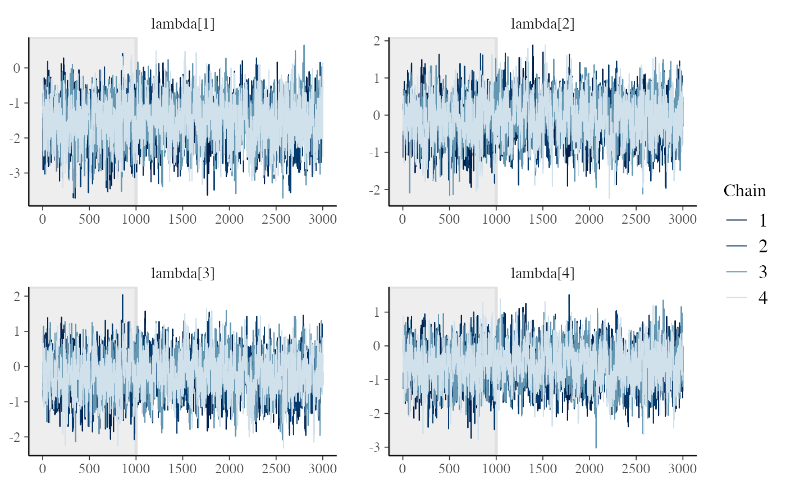

vignettes/home_advantage.Rmd
home_advantage.Rmdlibrary(bpcs) library(knitr) library(tidyverse) library(kableExtra) library(rstan) #Stan should use parallel cores # options(mc.cores = parallel::detectCores()) #use multiple cores options(mc.cores = 2) #CRAN works only with max 2 cores rstan::rstan_options(auto_write = TRUE)
In this vignette, we will go over a sport dataset that consists of the games from the main Brazilian football league from 2017-2019. In this example, we will create a ranking system for the teams based on the Bradley-Terry model. Then we will expand this to include ties, home-advantage effects and ties with home-advantage. Note that in this example we give equal weights to a game regardless of the date, i.e. more recent games have the same impact as older games.
The data can be accessed by:
| Time | WeekDay | Date | HomeTeam | VisitorTeam | Round | Stadium | ScoreHomeTeam | ScoreVisitorTeam |
|---|---|---|---|---|---|---|---|---|
| 16:00 | Saturday | 2017-05-13 | Flamengo | Atlético-MG | 1 | Maracanã | 1 | 1 |
| 19:00 | Saturday | 2017-05-13 | Corinthians | Chapecoense | 1 | Arena Corinthians | 1 | 1 |
| 16:00 | Sunday | 2017-05-14 | Avaí | Vitória | 1 | Ressacada | 0 | 0 |
| 16:00 | Sunday | 2017-05-14 | Bahia | Athlético-PR | 1 | Fonte Nova | 6 | 2 |
| 16:00 | Sunday | 2017-05-14 | Cruzeiro | São Paulo | 1 | Mineirão | 1 | 0 |
| 11:00 | Sunday | 2017-05-14 | Fluminense | Santos | 1 | Maracanã | 3 | 2 |
Let’s analyze only the data from 2019 and remove a few columns that are not relevant for this example:
d <- brasil_soccer_league %>% dplyr::filter(Date >= as.Date("2019-01-01") & Date <= as.Date("2019-12-31")) %>% select(HomeTeam, VisitorTeam, ScoreHomeTeam, ScoreVisitorTeam, Round)
Now we have a smaller dataset (380 rows with 5 variables)
| HomeTeam | VisitorTeam | ScoreHomeTeam | ScoreVisitorTeam | Round |
|---|---|---|---|---|
| Atlético-MG | Avaí | 2 | 1 | 1 |
| Chapecoense | Internacional | 2 | 0 | 1 |
| Flamengo | Cruzeiro | 3 | 1 | 1 |
| São Paulo | Botafogo-rj | 2 | 0 | 1 |
| Athlético-PR | Vasco | 4 | 1 | 1 |
| Bahia | Corinthians | 3 | 2 | 1 |
Let’s start fitting a simple Bradley-Terry model and handle ties randomly
m1 <- bpc( d, player0 = 'VisitorTeam', player1 = 'HomeTeam', player0_score = 'ScoreVisitorTeam', player1_score = 'ScoreHomeTeam', model_type = 'bt', solve_ties = 'random', priors = list(prior_lambda_std = 2.0), # making a more informative prior to improve convergence iter = 3000 ) #stan indicates a low bulk ESS so we are increasing the number of iterations
Looking at the Rhat and the n_eff:
print(m1) #> Estimated baseline parameters with HPD intervals: #> #> #> Parameter Mean HPD_lower HPD_higher n_eff Rhat #> ---------------------- ------- ---------- ----------- -------- ------ #> lambda[Avaí] -1.512 -2.717 -0.324 901.965 1.004 #> lambda[Internacional] -0.099 -1.188 0.982 800.245 1.004 #> lambda[Cruzeiro] -0.212 -1.315 0.849 744.606 1.005 #> lambda[Botafogo-rj] -0.557 -1.680 0.533 733.591 1.004 #> lambda[Vasco] 0.120 -1.013 1.161 772.260 1.004 #> lambda[Corinthians] 0.238 -0.848 1.327 757.279 1.005 #> lambda[CSA] -0.560 -1.671 0.532 784.098 1.004 #> lambda[Goiás] -0.102 -1.201 0.977 793.342 1.005 #> lambda[Fortaleza] -0.097 -1.241 0.939 778.323 1.004 #> lambda[Santos] 0.952 -0.218 2.033 827.851 1.004 #> lambda[Grêmio] 0.702 -0.439 1.793 801.998 1.004 #> lambda[Palmeiras] 0.951 -0.156 2.102 844.003 1.004 #> lambda[Atlético-MG] 0.015 -1.065 1.098 764.111 1.004 #> lambda[Chapecoense] -0.935 -2.105 0.153 815.746 1.004 #> lambda[Ceará] -0.561 -1.701 0.497 808.630 1.005 #> lambda[Athlético-PR] 0.581 -0.493 1.712 776.298 1.004 #> lambda[Flamengo] 1.377 0.188 2.528 898.672 1.004 #> lambda[São Paulo] 0.467 -0.637 1.540 811.487 1.004 #> lambda[Bahia] -0.329 -1.438 0.755 764.099 1.004 #> lambda[Fluminense] -0.213 -1.273 0.884 773.427 1.004 #> NOTES: #> * A higher lambda indicates a higher team ability
Both look fine for all teams.
Looking at the traceplots for the first 4 teams only (we can look at the others or launch the shinystan app)
stanfit<-get_stanfit(m1) posterior<-rstan::extract(stanfit,inc_warmup=T,permuted=F) bayesplot::mcmc_trace(posterior,pars = c("lambda[1]","lambda[2]","lambda[3]","lambda[4]"), n_warmup=1000)

They sound ok so there is no reason why we should not trust our data
Let’s get the rank with the simple bt model
get_rank_of_players(m1) %>% select(Parameter, MedianRank) %>% kable()
| Parameter | MedianRank |
|---|---|
| lambda[Flamengo] | 1 |
| lambda[Palmeiras] | 3 |
| lambda[Santos] | 3 |
| lambda[Grêmio] | 4 |
| lambda[Athlético-PR] | 5 |
| lambda[São Paulo] | 6 |
| lambda[Corinthians] | 8 |
| lambda[Vasco] | 9 |
| lambda[Atlético-MG] | 10 |
| lambda[Fortaleza] | 11 |
| lambda[Internacional] | 11 |
| lambda[Goiás] | 12 |
| lambda[Cruzeiro] | 13 |
| lambda[Fluminense] | 13 |
| lambda[Bahia] | 14 |
| lambda[Botafogo-rj] | 16 |
| lambda[Ceará] | 16 |
| lambda[CSA] | 16 |
| lambda[Chapecoense] | 19 |
| lambda[Avaí] | 20 |
Now lets investigate how ties impact our model
m2 <- bpc(d, player0 = 'VisitorTeam', player1 = 'HomeTeam', player0_score = 'ScoreVisitorTeam', player1_score = 'ScoreHomeTeam', model_type = 'davidson', solve_ties = 'none', priors = list(prior_lambda_std=2.0), # making a more informative prior to improve convergence iter = 3000) #stan indicates a low bulk ESS so we are increasing the number of iterations
For sake of space and repetition we will not present the diagnostics which can be observed at:
launch_shinystan(m2)
Let’s look at the parameters
print(m2) #> Estimated baseline parameters with HPD intervals: #> #> #> Parameter Mean HPD_lower HPD_higher n_eff Rhat #> ---------------------- ------- ---------- ----------- ---------- ------ #> lambda[Avaí] -1.946 -3.311 -0.569 1750.661 1.002 #> lambda[Internacional] 0.134 -1.062 1.324 1412.596 1.003 #> lambda[Cruzeiro] -0.714 -1.931 0.552 1473.319 1.002 #> lambda[Botafogo-rj] -0.616 -1.894 0.635 1438.449 1.003 #> lambda[Vasco] -0.095 -1.370 1.136 1459.150 1.002 #> lambda[Corinthians] 0.276 -0.973 1.485 1369.930 1.003 #> lambda[CSA] -1.134 -2.355 0.188 1510.089 1.002 #> lambda[Goiás] -0.095 -1.305 1.165 1448.993 1.002 #> lambda[Fortaleza] 0.100 -1.186 1.311 1481.276 1.003 #> lambda[Santos] 1.046 -0.250 2.299 1514.332 1.003 #> lambda[Grêmio] 0.598 -0.679 1.852 1460.049 1.002 #> lambda[Palmeiras] 1.215 -0.048 2.504 1588.496 1.002 #> lambda[Atlético-MG] -0.083 -1.339 1.150 1410.488 1.002 #> lambda[Chapecoense] -1.023 -2.269 0.291 1451.499 1.002 #> lambda[Ceará] -0.752 -2.033 0.469 1310.833 1.003 #> lambda[Athlético-PR] 0.692 -0.570 1.944 1479.983 1.003 #> lambda[Flamengo] 2.012 0.639 3.334 1744.933 1.002 #> lambda[São Paulo] 0.583 -0.601 1.843 1438.580 1.002 #> lambda[Bahia] -0.169 -1.387 1.070 1414.883 1.003 #> lambda[Fluminense] -0.409 -1.692 0.784 1416.105 1.003 #> nu 0.387 0.141 0.606 10699.912 1.000 #> NOTES: #> * A higher lambda indicates a higher team ability #> * Large positive values of the nu parameter indicates a high probability of tie regardless of the abilities of theplayers. #> * Large negative values of the nu parameter indicates a low probability of tie regardless of the abilities of the players. #> * Values of nu close to zero indicate that the probability of tie is more dependable on abilities of the players. If nu=0 the model reduces to the Bradley-Terry model.
Let’s look at the ranking with ties:
get_rank_of_players(m2) %>% select(Parameter, MedianRank) %>% kable()
| Parameter | MedianRank |
|---|---|
| lambda[Flamengo] | 1 |
| lambda[Palmeiras] | 3 |
| lambda[Santos] | 3 |
| lambda[Athlético-PR] | 5 |
| lambda[Grêmio] | 5 |
| lambda[São Paulo] | 6 |
| lambda[Corinthians] | 8 |
| lambda[Fortaleza] | 9 |
| lambda[Internacional] | 9 |
| lambda[Atlético-MG] | 11 |
| lambda[Goiás] | 11 |
| lambda[Vasco] | 11 |
| lambda[Bahia] | 12 |
| lambda[Fluminense] | 14 |
| lambda[Botafogo-rj] | 15 |
| lambda[Ceará] | 16 |
| lambda[Cruzeiro] | 16 |
| lambda[Chapecoense] | 18 |
| lambda[CSA] | 18 |
| lambda[Avaí] | 20 |
We can see that when we consider ties the rank has changed a bit and the difference between the teams reduce (we can see from both the parameter table as well as many equal median ranks between the teams).
d_home <- d %>% mutate(home_player1 = 1) m3 <- bpc(d_home, player0 = 'VisitorTeam', player1 = 'HomeTeam', player0_score = 'ScoreVisitorTeam', player1_score = 'ScoreHomeTeam', z_player1 = 'home_player1', model_type = 'btordereffect', solve_ties = 'random', priors = list(prior_lambda_std=2.0), # making a more informative prior to improve convergence iter = 3000) #stan indicates a low bulk ESS so we are increasing the number of iterations
For sake of space and repetition we will not present the diagnostics which can be observed at:
launch_shinystan(m3)
Let’s look at the parameters
print(m3) #> Estimated baseline parameters with HPD intervals: #> #> #> Parameter Mean HPD_lower HPD_higher n_eff Rhat #> ---------------------- ------- ---------- ----------- --------- ------ #> lambda[Avaí] -1.124 -2.232 0.022 1035.324 1.003 #> lambda[Internacional] 0.006 -1.072 1.066 938.978 1.005 #> lambda[Cruzeiro] -0.355 -1.431 0.722 979.024 1.004 #> lambda[Botafogo-rj] -0.600 -1.663 0.513 965.450 1.004 #> lambda[Vasco] -0.111 -1.216 0.941 941.637 1.004 #> lambda[Corinthians] 0.360 -0.733 1.451 952.672 1.003 #> lambda[CSA] -0.983 -2.074 0.157 968.517 1.004 #> lambda[Goiás] -0.355 -1.444 0.735 1070.053 1.004 #> lambda[Fortaleza] 0.123 -1.000 1.167 953.206 1.004 #> lambda[Santos] 0.867 -0.215 2.013 1000.970 1.003 #> lambda[Grêmio] 0.481 -0.619 1.579 967.924 1.004 #> lambda[Palmeiras] 0.611 -0.491 1.689 943.853 1.003 #> lambda[Atlético-MG] -0.113 -1.143 1.004 940.368 1.004 #> lambda[Chapecoense] -0.725 -1.790 0.421 947.271 1.003 #> lambda[Ceará] -0.723 -1.813 0.405 987.148 1.004 #> lambda[Athlético-PR] 0.731 -0.362 1.817 934.323 1.004 #> lambda[Flamengo] 2.003 0.742 3.244 1289.726 1.003 #> lambda[São Paulo] 0.366 -0.672 1.517 958.492 1.003 #> lambda[Bahia] 0.004 -1.062 1.075 959.965 1.003 #> lambda[Fluminense] -0.112 -1.141 1.017 949.740 1.004 #> gm -0.545 -0.784 -0.321 8647.537 1.000 #> NOTES: #> * A higher lambda indicates a higher team ability #> * Large positive values of the gm parameter indicate that player 1 has a disadvantage. E.g. in a home effect scenario positive values indicate a home disadvantage. #> * Large negative values of the gm parameter indicate that player 1 has an advantage. E.g. in a home effect scenario negative values indicate a home advantage. #> * Values of gm close to zero indicate that the order effect does not influence the contest. E.g. in a home effect it indicates that player 1 does not have a home advantage nor disadvantage.
We can see that the gm parameter is negative indicating that playing home indeed provide an advantage to the matches.
Let’s look at the ranking with home advantage:
get_rank_of_players(m3) %>% select(Parameter, MedianRank) %>% kable()
| Parameter | MedianRank |
|---|---|
| lambda[Flamengo] | 1 |
| lambda[Santos] | 3 |
| lambda[Athlético-PR] | 4 |
| lambda[Grêmio] | 5 |
| lambda[Palmeiras] | 5 |
| lambda[São Paulo] | 6 |
| lambda[Corinthians] | 7 |
| lambda[Fortaleza] | 9 |
| lambda[Bahia] | 10 |
| lambda[Internacional] | 10 |
| lambda[Atlético-MG] | 11 |
| lambda[Fluminense] | 11 |
| lambda[Vasco] | 11 |
| lambda[Cruzeiro] | 14 |
| lambda[Goiás] | 14 |
| lambda[Botafogo-rj] | 16 |
| lambda[Ceará] | 17 |
| lambda[Chapecoense] | 17 |
| lambda[Avaí] | 19 |
| lambda[CSA] | 19 |
We can see that the players ranking has changed a bit from the BT and the Davidson model when we compensate for the home advantage
Now let’s fit our last model. The Davidson model with order effect. Here we take into account the ties and the home advantage effect
m4 <- bpc(d_home, player0 = 'VisitorTeam', player1 = 'HomeTeam', player0_score = 'ScoreVisitorTeam', player1_score = 'ScoreHomeTeam', z_player1 = 'home_player1', model_type = 'davidsonordereffect', solve_ties = 'none', priors = list(prior_lambda_std=2.0), # making a more informative prior to improve convergence iter = 3000) #stan indicates a low bulk ESS so we are increasing the number of iterations
For sake of space and repetition we will not present the diagnostics which can be observed at:
launch_shinystan(m4)
Let’s look at the parameters
print(m4) #> Estimated baseline parameters with HPD intervals: #> #> #> Parameter Mean HPD_lower HPD_higher n_eff Rhat #> ---------------------- ------- ---------- ----------- --------- ------ #> lambda[Avaí] -2.602 -4.115 -1.062 3224.897 1.000 #> lambda[Internacional] 0.081 -1.347 1.451 2765.155 1.001 #> lambda[Cruzeiro] -0.888 -2.340 0.468 3070.744 1.001 #> lambda[Botafogo-rj] -0.707 -2.169 0.705 2720.582 1.001 #> lambda[Vasco] -0.022 -1.391 1.371 2831.757 1.001 #> lambda[Corinthians] 0.384 -0.920 1.849 2841.949 1.001 #> lambda[CSA] -1.423 -2.882 -0.040 2953.037 1.001 #> lambda[Goiás] -0.013 -1.401 1.340 2475.909 1.002 #> lambda[Fortaleza] 0.338 -1.129 1.721 2791.192 1.001 #> lambda[Santos] 1.338 -0.067 2.780 2896.967 1.001 #> lambda[Grêmio] 0.877 -0.537 2.269 2808.358 1.002 #> lambda[Palmeiras] 1.673 0.331 3.243 2933.422 1.001 #> lambda[Atlético-MG] 0.148 -1.254 1.508 3019.862 1.001 #> lambda[Chapecoense] -1.135 -2.559 0.304 2778.379 1.001 #> lambda[Ceará] -1.016 -2.375 0.481 2729.932 1.001 #> lambda[Athlético-PR] 1.046 -0.282 2.564 2681.334 1.002 #> lambda[Flamengo] 2.582 1.126 4.209 3186.794 1.001 #> lambda[São Paulo] 0.756 -0.635 2.157 2959.372 1.001 #> lambda[Bahia] -0.272 -1.673 1.093 2836.303 1.000 #> lambda[Fluminense] -0.624 -2.078 0.769 3055.887 1.001 #> nu 1.306 0.987 1.636 6091.921 1.000 #> gm -2.753 -3.376 -2.201 5844.066 1.000 #> NOTES: #> * A higher lambda indicates a higher team ability #> * Large positive values of the nu parameter indicates a high probability of tie regardless of the abilities of theplayers. #> * Large negative values of the nu parameter indicates a low probability of tie regardless of the abilities of the players. #> * Values of nu close to zero indicate that the probability of tie is more dependable on abilities of the players. If nu=0 the model reduces to the Bradley-Terry model. #> * Large positive values of the gm parameter indicate that player 1 has a disadvantage. E.g. in a home effect scenario positive values indicate a home disadvantage. #> * Large negative values of the gm parameter indicate that player 1 has an advantage. E.g. in a home effect scenario negative values indicate a home advantage. #> * Values of gm close to zero indicate that the order effect does not influence the contest. E.g. in a home effect it indicates that player 1 does not have a home advantage nor disadvantage.
We can see again that the home advantage gm parameter was negative, indicating that there is a home advantage effect.
Let’s look at the ranking with home advantage and ties:
get_rank_of_players(m4) %>% select(Parameter, MedianRank) %>% kable()
| Parameter | MedianRank |
|---|---|
| lambda[Flamengo] | 1 |
| lambda[Palmeiras] | 2 |
| lambda[Santos] | 4 |
| lambda[Athlético-PR] | 5 |
| lambda[Grêmio] | 5 |
| lambda[São Paulo] | 6 |
| lambda[Corinthians] | 8 |
| lambda[Fortaleza] | 9 |
| lambda[Atlético-MG] | 10 |
| lambda[Internacional] | 10 |
| lambda[Goiás] | 11 |
| lambda[Vasco] | 11 |
| lambda[Bahia] | 13 |
| lambda[Botafogo-rj] | 15 |
| lambda[Fluminense] | 15 |
| lambda[Ceará] | 16 |
| lambda[Cruzeiro] | 16 |
| lambda[Chapecoense] | 17 |
| lambda[CSA] | 18 |
| lambda[Avaí] | 20 |
Let’s see now using an information criteria (the WAIC) which model fits the data better.
We can look at each waic:
m1_waic #> #> Computed from 8000 by 380 log-likelihood matrix #> #> Estimate SE #> elpd_waic -248.9 8.2 #> p_waic 19.9 0.9 #> waic 497.8 16.4 m2_waic #> #> Computed from 8000 by 380 log-likelihood matrix #> #> Estimate SE #> elpd_waic -332.3 10.4 #> p_waic 19.5 1.1 #> waic 664.5 20.7 m3_waic #> #> Computed from 8000 by 380 log-likelihood matrix #> #> Estimate SE #> elpd_waic -240.3 8.9 #> p_waic 20.6 1.0 #> waic 480.6 17.8 m4_waic #> #> Computed from 8000 by 380 log-likelihood matrix #> #> Estimate SE #> elpd_waic -249.4 7.0 #> p_waic 15.9 0.7 #> waic 498.7 14.1
Or can also use the loo::compare function to see which performs better.
loo::loo_compare(m1_waic,m2_waic, m3_waic, m4_waic) #> elpd_diff se_diff #> model3 0.0 0.0 #> model1 -8.6 7.7 #> model4 -9.1 6.5 #> model2 -92.0 12.0
We can see here that the best performing model was the Davidson model (lowest WAIC)
In this vignette, we looked at 4 different models. However, we have not explored the impact of different priors in the model performance. For example, we might have improved the home advantage models by setting more informative priors to restrict the parameter estimate (which in model 4 was quite large).